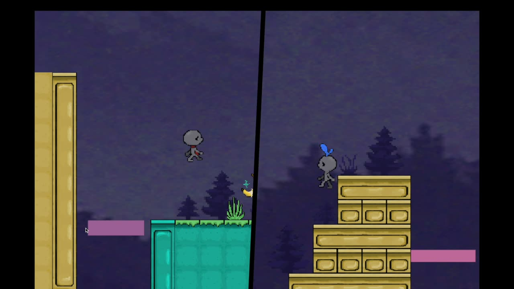

Era 01
Arcade cabinet
One static screen, Donkey Kong energy. Rolling barrels, a barrel spawner and retro movement that feels deliberately stiff.
24 hours, theme "Nostalgia Trip". A local co-op platformer where two shape-shifters cross three generations of platformer history — and take 2nd place at PJATK Game Jam v8.
Two players, two shape-shifters. Player one takes the Sonic form: small and fast, squeezes through tight gaps. Player two takes the Kong form: big and strong, pushes and smashes. The abilities are asymmetric on purpose — no level can be finished solo.
Each level is the same world in a different era. Level one is a low-res single-screen arcade cabinet. Level two is 16-bit pixel art with a shared scrolling camera. Level three is modern hand-drawn 2D with a dynamic, rotating split-screen.
We had one night, one artist drawing three different styles, and a jam theme that begged for exactly this. 101 commits later there was a build with all three eras — and a podium.
One static screen, Donkey Kong energy. Rolling barrels, a barrel spawner and retro movement that feels deliberately stiff.
Shared camera, trampolines, seesaw boosters, falling and moving islands, buttons that open the way for the other player.

Hand-drawn art and a split-screen system that rotates the divider as the players move apart. Built in the last hours, somehow shipped.